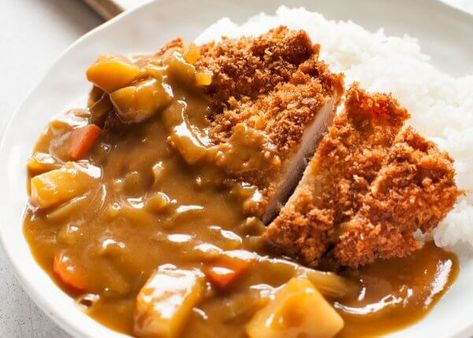

Chicken Katsu Curry

A little taste of Japan right in your kitchen
One of the more coommon foods around Japan is curry.
While there are many different ways to cook it, the
most popular version is Chicken katsu curry. A
delicious, hearty, cheap, and easy to make meal that
satisfies millions of people a year!
Ingredients
Rice
- 400g cooked japanese rice
Curry Sauce
- 4-5 cubes Japanese curry
- 1 large onion
- 1 large potato
- 1 carrot
- 800ml water
Chicken Katsu
- 80g panko breadcrumbs
- 4 tbsp plain flour
- 4 chicken breasts
- 1 egg, slightly beaten
- vegetable oil for deep-frying
Steps
- Cut the vegetables into chunks: Cut 1 large onion
1 large, potato and 1 carrot into small chunks
before adding them to a large pan half filled with
water.
-
Cook the rice: Bring the water to boil and then
simmer for 20 minutes or until the vegetables are
soft. It is a good idea to start cooking your rice
now.
-
Add the curry roux: Remove the saucepan from the heat.
Add 4-5 blocks of curry roux to the pot with vegetables.
Turn on the heat to low and allow to simmer for 10
minutes. Keep mixing until the curry sauce is thick and
smooth.
-
Prepare the chicken katsu: While the curry is infusing,
season your chicken breast pieces with salt and pepper
before covering with flour first and then raw egg, then
panko breadcrumbs.
-
Deep fry the chicken katsu: Heat up the oil in a separate
saucepan to 180°C and carefully lower the cutlets into the
oil and cook them for a few minutes on both sides until
they become a golden brown colour.
-
Garnish and enjoy: Slice the cooked chicken katsu into
strips and lay over a bed of rice before adding the curry
sauce. Garnish with fukujinzuke pickled radish, tonkatsu
sauce, and boiled egg halves. Enjoy.